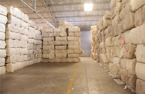

RM GODOWN
RM GODOWN
At the RM Godown, the raw materials are received from different mills, weighed with computer interfaced weighing machines and bar coding is done for proper identification. Then the Godown stocks them in a regular layout only to issue the same to the Loading Department as and when required through fork lifters.